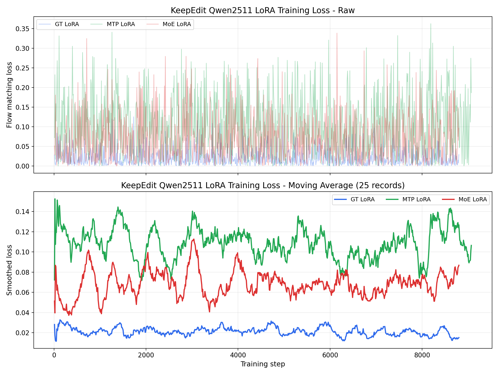
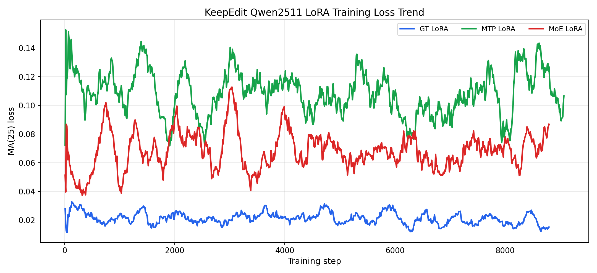

包含 GT LoRA、MTP LoRA、MoE LoRA。平滑曲线使用 25 条 loss 记录滑动平均；当前日志每 10 step 记录一次。


| 实验 | 点数 | 起始 step | 结束 step | 前窗均值 | 后窗均值 | 最小 loss | 最大 loss | 末端 MA25 |
|---|---|---|---|---|---|---|---|---|
| GT LoRA | 880 | 10 | 8800 | 0.025601 | 0.018469 | 0.000000 | 0.125597 | 0.015200 |
| MTP LoRA | 907 | 10 | 9070 | 0.114817 | 0.109041 | 0.000000 | 0.362900 | 0.106464 |
| MoE LoRA | 880 | 10 | 8800 | 0.047729 | 0.078547 | 0.000000 | 0.338903 | 0.086802 |
数据文件：three_lora_loss_curves.csv，摘要：three_lora_loss_summary.json